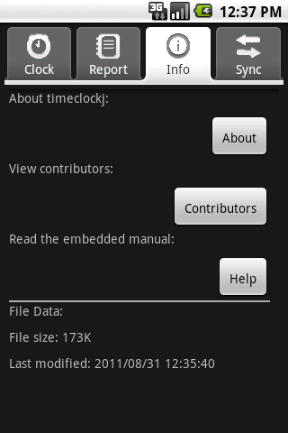

| [ < ] | [ > ] | [ << ] | [ Up ] | [ >> ] | [Top] | [Contents] | [Index] | [ ? ] |
The information tab gives useful information about the version, license, contributors, help pages and file data:
The different functions of the buttons are as follows:
timeclockj being used, as well as license information and project website;
| [ < ] | [ > ] | [ << ] | [ Up ] | [ >> ] |
This document was generated by rich on April 1, 2013 using texi2html 1.82.